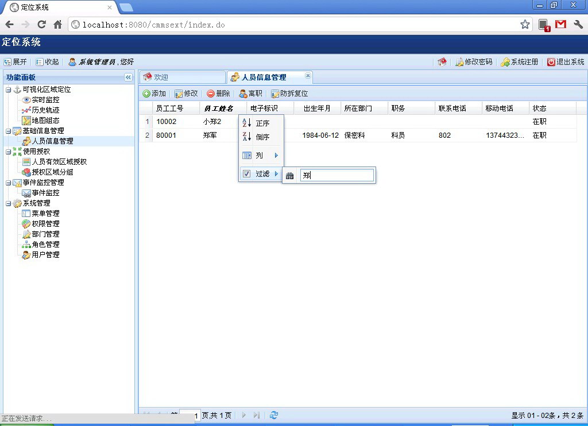
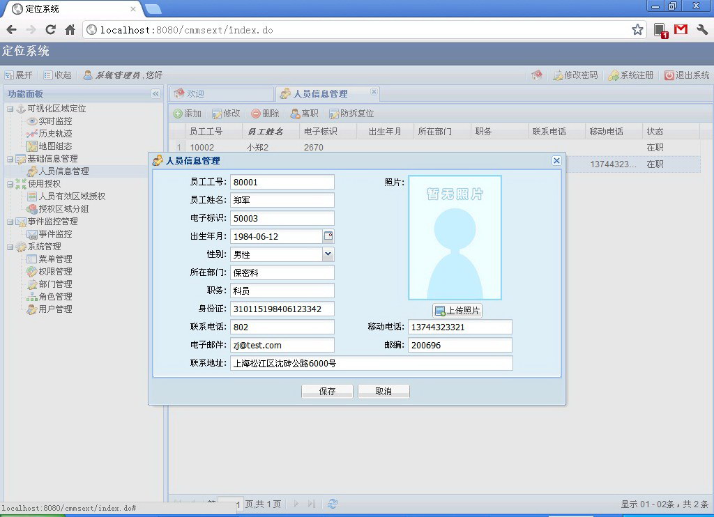
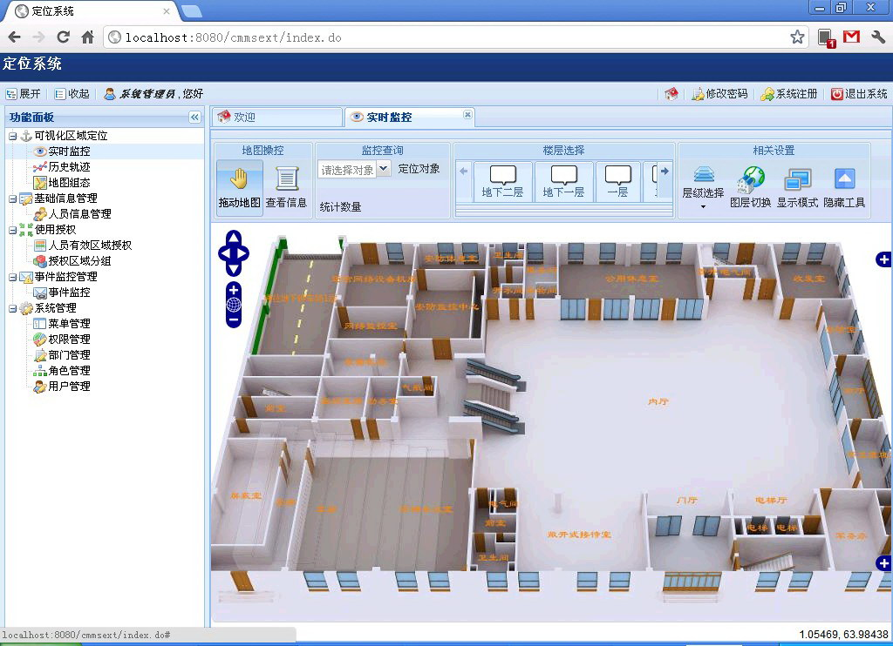
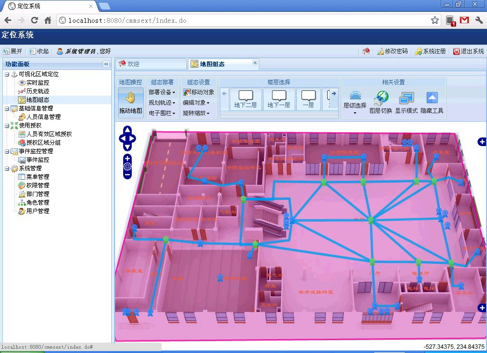
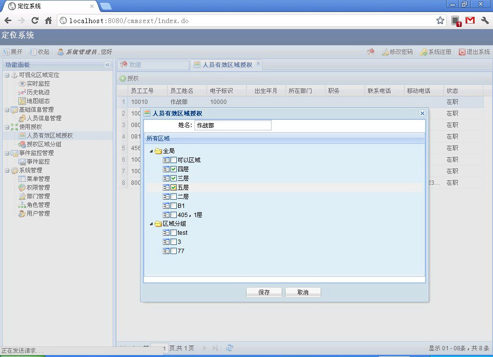
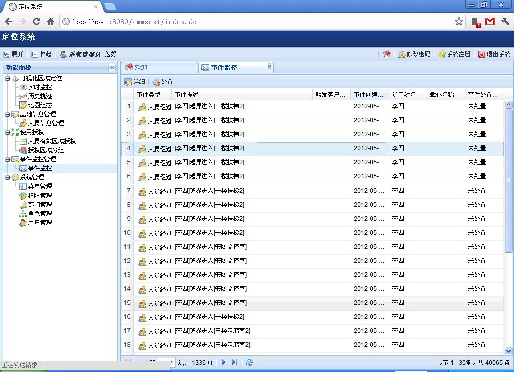
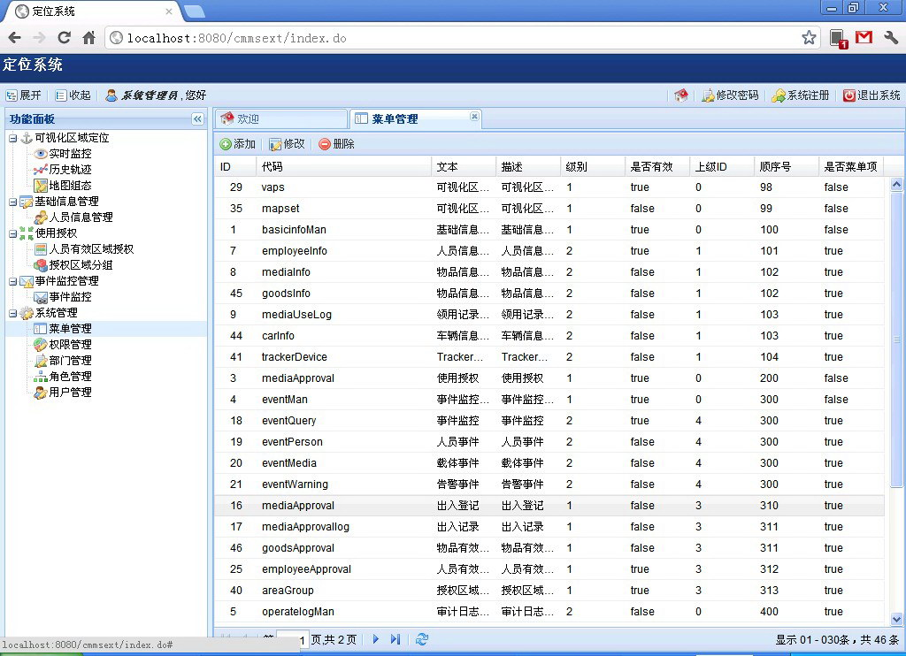
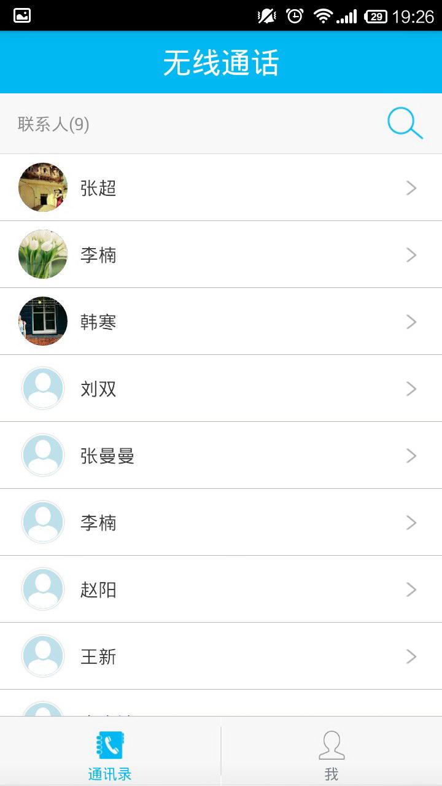
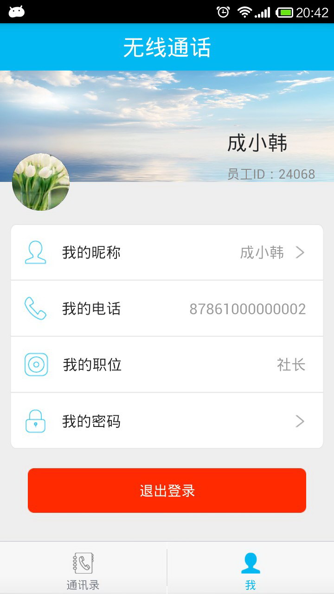

无线定位解决方案是基于RFID技术实现的人员图形化区域定位监控系统，支持管理后台的各项配置、定位监控、以及客户端的实时对讲等功能。
系统管理后台支持根据用户权限控制菜单权限，并且支持人员信息维护、可视化区域定位、地图信息管理、事件监控以及权限管理等功能。
人员信息管理模块主要对人员的信息进行查询和维护。可以输入员工工号，姓名，绑定的电子标识，出生年月，性别，部门，职务身份证，联系电话，移动电话，邮件，地址，邮编等信息，并可以上传员工照片。
 可视化区域定位模块包含实时定位，人员实时追踪，历史轨迹，地图组态，网络管理，告警短信通知等模块，可以实时的有效的监控人员定位情况。
 地图信息管理模块主要包含了人员有效区域授权和授权区域分组，可以在地图相关电子围栏上设定合法区域用于人员进出。
事件监控管理内包含了人员进出区域记录，可以查询人员是否合法进入该区域和相关去过区域的历史记录，进行查询和查看详细信息等操作。
系统权限管理模块能对系统普通运行所需配置进行操作，关系到系统的稳定运行，不推荐对普通用户开放。
手机客户端除了基本的定位功能外，支持通讯录、用户间能够进行实时通话，还能够对个人信息进行维护。
 